乐优商城是一个全品类的电商网站，因此商品的种类繁多，每一件商品，其属性又有差别。为了更准确描述商品及细分差别，抽象出两个概念：SPU和SKU，了解一下：
SPU：Standard Product Unit （标准产品单位） ，一组具有共同属性的商品集
SKU：Stock Keeping Unit（库存量单位），SPU商品集因具体特性不同而细分的每个商品
以图为例来看：
可以看出：
弄清楚了SPU和SKU的概念区分，接下来我们一起思考一下该如何设计数据库表。
首先来看SPU，大家一起思考下SPU应该有哪些字段来描述？
id:主键
title：标题
description：描述
specification：规格
packaging_list：包装
after_service：售后服务
comment：评价
category_id：商品分类
brand_id：品牌似乎并不复杂，但是大家仔细思考一下，商品的规格字段你如何填写？

不同商品的规格不一定相同，数据库中要如何保存？
再看下SKU，大家觉得应该有什么字段？
id：主键
spu_id：关联的spu
price：价格
images：图片
stock：库存
颜色？
内存？
硬盘？碰到难题了，不同的商品分类，可能属性是不一样的，比如手机有内存，衣服有尺码，我们是全品类的电商网站，这些不同的商品的不同属性，如何设计到一张表中？
仔细查看每一种商品的规格你会发现：
虽然商品规格千变万化，但是同一类商品（如手机）的规格是统一的，有图为证：
华为的规格：
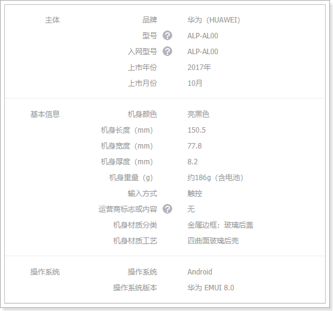
三星的规格：

也就是说，商品的规格参数应该是与分类绑定的。每一个分类都有统一的规格参数模板，但不同商品其参数值可能不同。
如下图所示：

SPU中会有一些特殊属性，用来区分不同的SKU，我们称为SKU特有属性。如华为META10的颜色、内存属性。
不同种类的商品，一个手机，一个衣服，其SKU属性不相同。
同一种类的商品，比如都是衣服，SKU属性基本是一样的，都是颜色、尺码等。
这样说起来，似乎SKU的特有属性也是与分类相关的？事实上，仔细观察你会发现，SKU的特有属性是商品规格参数的一部分：

也就是说，我们没必要单独对SKU的特有属性进行设计，它可以看做是规格参数中的一部分。这样规格参数中的属性可以标记成两部分：
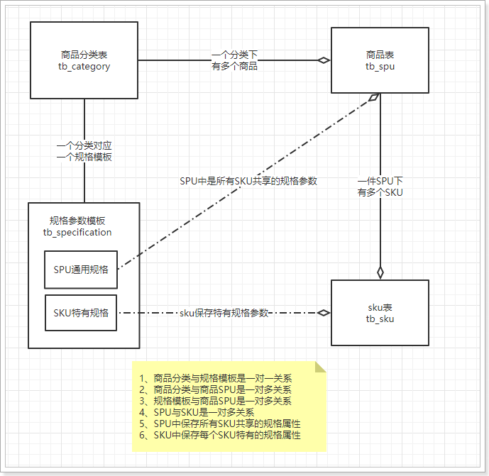
打开一个搜索页，我们来看看过滤的条件：

你会发现，过滤条件中的屏幕尺寸、运行内存、网路、机身内存、电池容量、CPU核数等，在规格参数中都能找到：

也就是说，规格参数中的数据，将来会有一部分作为搜索条件来使用。我们可以在设计时，将这部分属性标记出来，将来做搜索的时候，作为过滤条件。要注意的是，无论是SPU的全局属性，还是SKU的特有属性，都有可能作为搜索过滤条件的，并不冲突，而是有一个交集：

先看下规格参数表：
CREATE TABLE `tb_specification` (
`category_id` bigint(20) NOT NULL COMMENT '规格模板所属商品分类id',
`specifications` varchar(3000) NOT NULL DEFAULT '' COMMENT '规格参数模板，json格式',
PRIMARY KEY (`category_id`)
) ENGINE=InnoDB DEFAULT CHARSET=utf8 COMMENT='商品规格参数模板，json格式。';很奇怪是吧，只有两个字段。特别需要注意的是第二个字段：
为什么是一个json？我们看下规格参数的格式：

如果按照传统数据库设计，这里至少需要3张表：
这样程序的复杂度大大增加，但是提高了数据的复用性。
我们的解决方案是，采用json来保存整个规格参数模板，不需要额外的表，一个字符串就够了。
先整体看一下：

接下来是params：

以主芯片这一组为例：
group：注明，这里是主芯片
params：该组的所有规格属性，因为不止一个，所以是一个数组。这里包含四个规格属性：CPU品牌，CPU型号，CPU频率，CPU核数。每个规格属性都是一个对象，包含以下信息：
上面的截图中所有属性都是全局属性，我们来看看内存，应该是特有属性：

总结下：
k代表属性名称，没有值，具体的SPU才能确定值global标记numerical标记，并且指定单位unitsearchable标记页面比较复杂，这里就不带着大家去实现完整页面效果了，我们一起分析一下即可。
打开规格参数页面，看到如下内容：

因为规格是跟商品分类绑定的，因此首先会展现商品分类树，并且提示你要选择商品分类，才能看到规格参数的模板。一起了解下页面的实现：
可以看出页面分成3个部分：
v-card-title：标题部分，这里是提示信息，告诉用户要先选择分类，才能看到模板
v-tree：这里用到的是我们之前讲过的树组件，展示商品分类树，不过现在是假数据，我们只要把treeData属性删除，它就会走url属性指定的路径去查询真实的商品分类树了。
<v-tree url="/item/category/list" :isEdit="false" @handleClick="handleClick" />v-dialog：Vuetify提供的对话框组件，v-model绑定的dialog属性是boolean类型：
接下来，看看Vue实例中data定义了哪些属性，对页面会产生怎样的影响：
点击树节点后要显示规格参数，因此查询功能应该编写在点击事件中。
了解一下：
当我们点击树节点时，要将v-dialog打开，因此必须绑定一个点击事件：
我们来看下handleClick方法：
handleClick(node) {
// 判断点击的节点是否是父节点（只有点击到叶子节点才会弹窗）
if (!node.isParent) {
// 如果是叶子节点，那么就发起ajax请求，去后台查询商品规格数据。
this.$http.get("/item/spec/" + node.id)
.then(resp => {
// 查询成功后，把响应结果赋值给specifications属性，Vue会进行自动渲染。
this.specifications = resp.data;
// 记录下此时的规格数据，当页面撤销修改时，用来恢复原始数据
this.oldSpec = resp.data;
// 打开弹窗
this.dialog = true;
// 标记此时要进行修改操作
this.isInsert = false;
})
.catch(() => {
// 如果没有查询成功，那么询问是否添加规格
this.$message.confirm('该分类还没有规格参数，是否添加?')
.then(() => {
// 如果要添加，则将specifications初始化为空
this.specifications = [{
group: '',
params: []
}];
// 打开弹窗
this.dialog = true;
// 标记为新增
this.isInsert = true;
})
})
}
}因此，我们接下来要做的事情，就是编写接口，实现规格参数的查询了。
实体类
@Table(name = "tb_specification")
public class Specification {
@Id
private Long categoryId;
private String specifications;
public Long getCategoryId() {
return categoryId;
}
public void setCategoryId(Long categoryId) {
this.categoryId = categoryId;
}
public String getSpecifications() {
return specifications;
}
public void setSpecifications(String specifications) {
this.specifications = specifications;
}
}mapper
public interface SpecificationMapper extends Mapper<Specification> {
}controller
先分析下需要的东西，在页面的ajax请求中可以看出：
请求方式：查询，肯定是get
请求路径：/spec/{cid} ，这里通过路径占位符传递商品分类的id
请求参数：商品分类id
返回结果：页面是直接把resp.data赋值给了specifications：

那么我们返回的应该是规格参数的字符串
代码：
@RestController
@RequestMapping("spec")
public class SpecificationController {
@Autowired
private SpecificationService specificationService;
@GetMapping("{id}")
public ResponseEntity<String> querySpecificationByCategoryId(@PathVariable("id") Long id){
Specification spec = this.specificationService.queryById(id);
if (spec == null) {
return new ResponseEntity<>(HttpStatus.NOT_FOUND);
}
return ResponseEntity.ok(spec.getSpecifications());
}
}service:
@Service
public class SpecificationService {
@Autowired
private SpecificationMapper specificationMapper;
public Specification queryById(Long id) {
return this.specificationMapper.selectByPrimaryKey(id);
}
}页面访问测试：
目前，我们数据库只提供了3条规格参数信息：

我们访问：http://api.leyou.com/api/item/spec/76
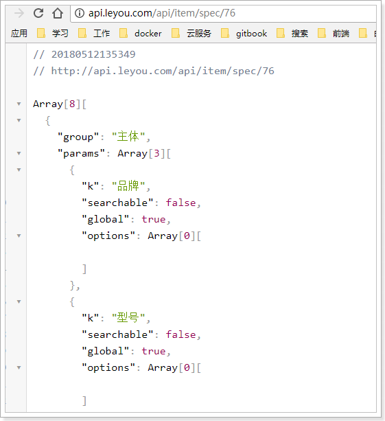
然后在后台系统中测试：
当我们点击一个还不存在的规格参数的商品分类：
增删改的作业就留给大家去完成了。页面中接口都已定义，你要做的就是实现后台接口。
规格确定以后，就可以添加商品了,先看下数据库表
SPU表：
CREATE TABLE `tb_spu` (
`id` bigint(20) NOT NULL AUTO_INCREMENT COMMENT 'spu id',
`title` varchar(255) NOT NULL DEFAULT '' COMMENT '标题',
`sub_title` varchar(255) DEFAULT '' COMMENT '子标题',
`cid1` bigint(20) NOT NULL COMMENT '1级类目id',
`cid2` bigint(20) NOT NULL COMMENT '2级类目id',
`cid3` bigint(20) NOT NULL COMMENT '3级类目id',
`brand_id` bigint(20) NOT NULL COMMENT '商品所属品牌id',
`saleable` tinyint(1) NOT NULL DEFAULT '1' COMMENT '是否上架，0下架，1上架',
`valid` tinyint(1) NOT NULL DEFAULT '1' COMMENT '是否有效，0已删除，1有效',
`create_time` datetime DEFAULT NULL COMMENT '添加时间',
`last_update_time` datetime DEFAULT NULL COMMENT '最后修改时间',
PRIMARY KEY (`id`)
) ENGINE=InnoDB AUTO_INCREMENT=208 DEFAULT CHARSET=utf8 COMMENT='spu表，该表描述的是一个抽象的商品，比如 iphone8';与我们前面分析的基本类似，但是似乎少了一些字段，比如商品描述。
我们做了表的垂直拆分，将SPU的详情放到了另一张表：tb_spu_detail
CREATE TABLE `tb_spu_detail` (
`spu_id` bigint(20) NOT NULL,
`description` text COMMENT '商品描述信息',
`specifications` varchar(3000) NOT NULL DEFAULT '' COMMENT '全部规格参数数据',
`spec_template` varchar(1000) NOT NULL COMMENT '特有规格参数及可选值信息，json格式',
`packing_list` varchar(1000) DEFAULT '' COMMENT '包装清单',
`after_service` varchar(1000) DEFAULT '' COMMENT '售后服务',
PRIMARY KEY (`spu_id`)
) ENGINE=InnoDB DEFAULT CHARSET=utf8;这张表中的数据都比较大，为了不影响主表的查询效率我们拆分出这张表。
需要注意的是这两个字段：specifications和spec_template。
前面讲过规格参数与商品分类绑定，一个分类下的所有SPU具有类似的规格参数。SPU下的SKU可能会有不同的规格参数，因此我们计划是这样：
以手机为例，品牌、操作系统等肯定是全局属性，内存、颜色等肯定是特有属性。
当你确定了一个SPU，比如小米的：红米4X
全局属性举例：
品牌：小米
型号：红米4X特有属性举例：
颜色：[香槟金, 樱花粉, 磨砂黑]
内存：[2G, 3G]
机身存储：[16GB, 32GB]来看下我们的 表如何存储这些信息：
首先是specifications，其中保存全部规格参数信息，因此也是一个json格式：
整体来看：
整体看上去与规格参数表中的数据一样，也是一个数组，并且分组，每组下有多个参数
展开一组来看

可以看到，与规格参数表中的模板相比，最大的区别就是，这里指定了具体的值，因为商品确定了，其参数值肯定也确定了。
特有属性
刚才看到的是全局属性，那么特有属性在这个字段中如何存储呢？
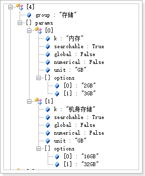
我们发现特有属性也是有的，但是，注意看这里是不确定具体值的，因为特有属性只有在SKU中才能确定。这里只是保存了options，所有SKU属性的可选项。
在哪里会用到这个字段的值呢，商品详情页的规格参数信息中：

既然specifications已经包含了所有的规格参数，那么为什么又多出了一个spec_template呢？
里面又有哪些内容呢？
来看数据格式：

可以看出，里面只保存了规格参数中的特有属性，而且格式进行了大大的简化，只有属性的key，和待选项。
为什么要冗余保存一份？
因为很多场景下我们只需要查询特有规格属性，如果放在一起，每次查询再去分离比较麻烦。
比如，商品详情页展示可选的规格参数时：

CREATE TABLE `tb_sku` (
`id` bigint(20) NOT NULL AUTO_INCREMENT COMMENT 'sku id',
`spu_id` bigint(20) NOT NULL COMMENT 'spu id',
`title` varchar(255) NOT NULL COMMENT '商品标题',
`images` varchar(1000) DEFAULT '' COMMENT '商品的图片，多个图片以‘,’分割',
`price` bigint(15) NOT NULL DEFAULT '0' COMMENT '销售价格，单位为分',
`indexes` varchar(100) COMMENT '特有规格属性在spu属性模板中的对应下标组合',
`own_spec` varchar(1000) COMMENT 'sku的特有规格参数，json格式，反序列化时应使用linkedHashMap，保证有序',
`enable` tinyint(1) NOT NULL DEFAULT '1' COMMENT '是否有效，0无效，1有效',
`create_time` datetime NOT NULL COMMENT '添加时间',
`last_update_time` datetime NOT NULL COMMENT '最后修改时间',
PRIMARY KEY (`id`),
KEY `key_spu_id` (`spu_id`) USING BTREE
) ENGINE=InnoDB DEFAULT CHARSET=utf8 COMMENT='sku表,该表表示具体的商品实体,如黑色的64GB的iphone 8';还有一张表，代表库存：
CREATE TABLE `tb_stock` (
`sku_id` bigint(20) NOT NULL COMMENT '库存对应的商品sku id',
`seckill_stock` int(9) DEFAULT '0' COMMENT '可秒杀库存',
`seckill_total` int(9) DEFAULT '0' COMMENT '秒杀总数量',
`stock` int(9) NOT NULL COMMENT '库存数量',
PRIMARY KEY (`sku_id`)
) ENGINE=InnoDB DEFAULT CHARSET=utf8 COMMENT='库存表，代表库存，秒杀库存等信息';问题：为什么要将库存独立一张表？
因为库存字段写频率较高，而SKU的其它字段以读为主，因此我们将两张表分离，读写不会干扰。
特别需要注意的是sku表中的indexes字段和own_spec字段。sku中应该保存特有规格参数的值，就在这两个字段中。
在SPU表中，已经对特有规格参数及可选项进行了保存，结构如下：
{
"机身颜色": [
"香槟金",
"樱花粉",
"磨砂黑"
],
"内存": [
"2GB",
"3GB"
],
"机身存储": [
"16GB",
"32GB"
]
}这些特有属性如果排列组合，会产生12个不同的SKU，而不同的SKU，其属性就是上面备选项中的一个。
比如：
你会发现，每一个属性值，对应于SPUoptions数组的一个选项，如果我们记录下角标，就是这样：
既然如此，我们是不是可以将不同角标串联起来，作为SPU下不同SKU的标示。这就是我们的indexes字段。

这个设计在商品详情页会特别有用：

当用户点击选中一个特有属性，你就能根据 角标快速定位到sku。
看结构：
{"机身颜色":"香槟金","内存":"2GB","机身存储":"16GB"}保存的是特有属性的键值对。
SPU中保存的是可选项，但不确定具体的值，而SKU中的保存的就是具体的键值对了。
这样，在页面展示规格参数信息时，就可以根据key来获取值，用于显示。
现在商品表中虽然有数据，但是所有的图片信息都是无法访问的，我们需要把图片导入到虚拟机：
首先，把课前资料提供的数据上传到虚拟机下：/leyou/static目录：

然后，使用命令解压缩：
unzip images.zip修改Nginx配置，使nginx反向代理这些图片地址：
vim /opt/nginx/config/nginx.conf修改成如下配置：
server {
listen 80;
server_name image.leyou.com;
# 监听域名中带有group的，交给FastDFS模块处理
location ~/group([0-9])/ {
ngx_fastdfs_module;
}
# 将其它图片代理指向本地的/leyou/static目录
location / {
root /leyou/static/;
}
error_page 500 502 503 504 /50x.html;
location = /50x.html {
root html;
}
}接下来，我们实现商品管理的页面，先看下我们要实现的效果：

可以看出整体是一个table，然后有新增按钮。是不是跟昨天写品牌管理很像？
模板代码在分别在Goods.vue

接下来，我们自己来实现一下，新建两个组件：MyGoods.vue和MyGoodsForm.vue
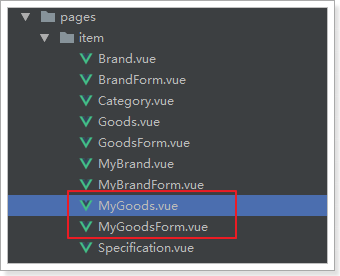
内容先随意：
<template>
<v-card>
MyGoods
</v-card>
</template>
<script>
export default {
name: "my-goods",
data() {
return {
}
}
}
</script>
<style scoped>
</style>然后修改menu.js,新建一个菜单：
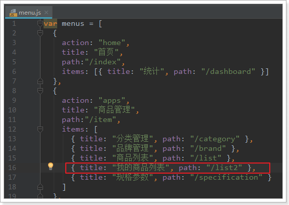
修改router/index.js，添加一个路由：

预览一下：
商品列表页与品牌列表页几乎一样，我们可以直接去复制一份过来，然后进行一些修改。
首先，字段不一样，商品列表也展示的SPU信息，包含以下字段：
id：
title：标题
cname：商品分类名称
bname：品牌名称完整代码：
<template>
<v-card>
<v-card-title>
<v-btn color="primary" @click="addGoods">新增商品</v-btn>
<!--搜索框，与search属性关联-->
<v-spacer/>
<v-text-field label="输入关键字搜索" v-model.lazy="search" append-icon="search" hide-details/>
</v-card-title>
<v-divider/>
<v-data-table
:headers="headers"
:items="goodsList"
:search="search"
:pagination.sync="pagination"
:total-items="totalGoods"
:loading="loading"
class="elevation-1"
>
<template slot="items" slot-scope="props">
<td>{{ props.item.id }}</td>
<td class="text-xs-center">{{ props.item.title }}</td>
<td class="text-xs-center">{{props.item.cname}}</td>
<td class="text-xs-center">{{ props.item.bname }}</td>
<td class="justify-center layout">
<v-btn color="info" @click="editGoods(props.item)">编辑</v-btn>
<v-btn color="warning">删除</v-btn>
<v-btn >下架</v-btn>
</td>
</template>
</v-data-table>
<!--弹出的对话框-->
<v-dialog max-width="500" v-model="show" persistent>
<v-card>
<!--对话框的标题-->
<v-toolbar dense dark color="primary">
<v-toolbar-title>{{isEdit ? '修改' : '新增'}}商品</v-toolbar-title>
<v-spacer/>
<!--关闭窗口的按钮-->
<v-btn icon @click="closeWindow"><v-icon>close</v-icon></v-btn>
</v-toolbar>
<!--对话框的内容，表单-->
<v-card-text class="px-5">
<my-goods-form :oldGoods="oldGoods" />
</v-card-text>
</v-card>
</v-dialog>
</v-card>
</template>
<script>
// 导入自定义的表单组件
import MyGoodsForm from './MyGoodsForm'
export default {
name: "my-goods",
data() {
return {
search: '', // 搜索过滤字段
totalGoods: 0, // 总条数
goodsList: [], // 当前页品牌数据
loading: true, // 是否在加载中
pagination: {}, // 分页信息
headers: [
{text: 'id', align: 'center', value: 'id'},
{text: '标题', align: 'center', sortable: false, value: 'title'},
{text: '商品分类', align: 'center', sortable: false, value: 'cname'},
{text: '品牌', align: 'center', value: 'bname', sortable: false,},
{text: '操作', align: 'center', sortable: false}
],
show: false,// 控制对话框的显示
oldGoods: {}, // 即将被编辑的商品信息
isEdit: false, // 是否是编辑
}
},
mounted() { // 渲染后执行
// 查询数据
this.getDataFromServer();
},
watch: {
pagination: { // 监视pagination属性的变化
deep: true, // deep为true，会监视pagination的属性及属性中的对象属性变化
handler() {
// 变化后的回调函数，这里我们再次调用getDataFromServer即可
this.getDataFromServer();
}
},
search: { // 监视搜索字段
handler() {
this.getDataFromServer();
}
}
},
methods: {
getDataFromServer() { // 从服务的加载数的方法。
// 发起请求
this.$http.get("/item/spu/page", {
params: {
key: this.search, // 搜索条件
page: this.pagination.page,// 当前页
rows: this.pagination.rowsPerPage,// 每页大小
sortBy: this.pagination.sortBy,// 排序字段
desc: this.pagination.descending// 是否降序
}
}).then(resp => { // 这里使用箭头函数
this.goodsList = resp.data.items;
this.totalGoods = resp.data.total;
// 完成赋值后，把加载状态赋值为false
this.loading = false;
})
},
addGoods() {
// 修改标记
this.isEdit = false;
// 控制弹窗可见：
this.show = true;
// 把oldBrand变为null
this.oldBrand = null;
},
editGoods(oldGoods){
// 修改标记
this.isEdit = true;
// 控制弹窗可见：
this.show = true;
// 获取要编辑的brand
this.oldGoods = oldGoods;
},
closeWindow(){
// 重新加载数据
this.getDataFromServer();
// 关闭窗口
this.show = false;
}
},
components:{
MyGoodsForm
}
}
</script>
<style scoped>
</style>主要的改动点：
页面的v-data-table中的属性绑定修改。items指向goodsList，totalItems指向totalGoods
页面渲染的字段名修改：字段改成商品的SPU字段：id、title，cname(商品分类名称),bname（品牌名称）
data属性修改了以下属性：
加载数据的函数：getDataFromServer，请求的路径进行了修改，另外去除了跟排序相关的查询。SPU查询不排序
新增商品的事件函数：清除了一些数据查询接口，只保留弹窗
查看效果：

因为没有编写查询功能，表格一直处于loading状态。
接下来看弹窗：

另外，似乎页面少了对上下架商品的过滤，在原始效果图中是有的：

这在Vuetify中是一组按钮，我们查看帮助文档：
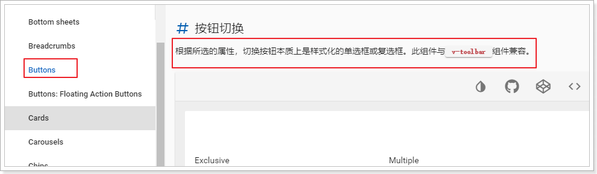
查看实例得到以下信息：
v-btn：一个按钮
v-btn-toggle：按钮组，内部可以有多个按钮，点击切换，有以下属性：
改造页面：
首先在data中定义一个属性，记录按钮的值。
filter:{
saleable: false, // 上架还是下架
search: '', // 搜索过滤字段
}这里我们的做法是定义一个filter属性，内部在定义search来关联过滤字段，saleable来关联上下架情况。
这样watch就必须监听filter，而不是只监听search了：
filter: {// 监视搜索字段
handler() {
this.getDataFromServer();
},
deep:true
}另外，页面中与search有关的所有字段都需要修改成filter.search:
<!--搜索框，与search属性关联-->
<v-text-field label="输入关键字搜索" v-model.lazy="filter.search" append-icon="search" hide-details/>然后，在页面中添加按钮组：
<v-flex xs3>
状态：
<v-btn-toggle v-model="filter.saleable">
<v-btn flat>
全部
</v-btn>
<v-btn flat :value="true">
上架
</v-btn>
<v-btn flat :value="false">
下架
</v-btn>
</v-btn-toggle>
</v-flex>最后，不要忘了在查询时，将saleable携带上：
getDataFromServer() { // 从服务的加载数的方法。
// 发起请求
this.$http.get("/item/spu/page", {
params: {
key: this.filter.search, // 搜索条件
saleable: this.filter.saleable, // 上下架
page: this.pagination.page,// 当前页
rows: this.pagination.rowsPerPage,// 每页大小
}
}).then(resp => { // 这里使用箭头函数
this.goodsList = resp.data.items;
this.totalGoods = resp.data.total;
// 完成赋值后，把加载状态赋值为false
this.loading = false;
})
}页面已经准备好，接下来在后台提供分页查询SPU的功能：
SPU
@Table(name = "tb_spu")
public class Spu {
@Id
@GeneratedValue(strategy = GenerationType.IDENTITY)
private Long id;
private Long brandId;
private Long cid1;// 1级类目
private Long cid2;// 2级类目
private Long cid3;// 3级类目
private String title;// 标题
private String subTitle;// 子标题
private Boolean saleable;// 是否上架
private Boolean valid;// 是否有效，逻辑删除用
private Date createTime;// 创建时间
private Date lastUpdateTime;// 最后修改时间
// 省略getter和setter
}SPU详情
@Table(name="tb_spu_detail")
public class SpuDetail {
@Id
private Long spuId;// 对应的SPU的id
private String description;// 商品描述
private String specTemplate;// 商品特殊规格的名称及可选值模板
private String specifications;// 商品的全局规格属性
private String packingList;// 包装清单
private String afterService;// 售后服务
// 省略getter和setter
}先分析：
请求方式：GET
请求路径：/spu/page
请求参数：
返回结果：商品SPU的分页信息。
要注意，页面展示的是商品分类和品牌名称，而数据库中保存的是id，怎么办？
我们可以新建一个类，继承SPU，并且拓展cname和bname属性，写到ly-item-interface
public class SpuBo extends Spu {
String cname;// 商品分类名称
String bname;// 品牌名称
// 略 。。
}编写controller代码：
我们把与商品相关的一切业务接口都放到一起，起名为GoodsController，业务层也是这样
@RestController
public class GoodsController {
@Autowired
private GoodsService goodsService;
/**
* 分页查询SPU
* @param page
* @param rows
* @param key
* @return
*/
@GetMapping("/spu/page")
public ResponseEntity<PageResult<SpuBo>> querySpuByPage(
@RequestParam(value = "page", defaultValue = "1") Integer page,
@RequestParam(value = "rows", defaultValue = "5") Integer rows,
@RequestParam(value = "key", required = false) String key) {
// 分页查询spu信息
PageResult<SpuBo> result = this.goodsService.querySpuByPageAndSort(page, rows, key);
if (result == null || result.getItems().size() == 0) {
return new ResponseEntity<>(HttpStatus.NOT_FOUND);
}
return ResponseEntity.ok(result);
}
}所有商品相关的业务（包括SPU和SKU）放到一个业务下：GoodsService。
@Service
public class GoodsService {
@Autowired
private SpuMapper spuMapper;
@Autowired
private CategoryService categoryService;
@Autowired
private BrandMapper brandMapper;
public PageResult<SpuBo> querySpuByPageAndSort(Integer page, Integer rows, Boolean saleable, String key) {
// 1、查询SPU
// 分页,最多允许查100条
PageHelper.startPage(page, Math.min(rows, 100));
// 创建查询条件
Example example = new Example(Spu.class);
Example.Criteria criteria = example.createCriteria();
// 是否过滤上下架
if (saleable != null) {
criteria.orEqualTo("saleable", saleable);
}
// 是否模糊查询
if (StringUtils.isNotBlank(key)) {
criteria.andLike("title", "%" + key + "%");
}
Page<Spu> pageInfo = (Page<Spu>) this.spuMapper.selectByExample(example);
List<SpuBo> list = pageInfo.getResult().stream().map(spu -> {
// 2、把spu变为 spuBo
SpuBo spuBo = new SpuBo();
// 属性拷贝
BeanUtils.copyProperties(spu, spuBo);
// 3、查询spu的商品分类名称,要查三级分类
List<String> names = this.categoryService.queryNameByIds(
Arrays.asList(spu.getCid1(), spu.getCid2(), spu.getCid3()));
// 将分类名称拼接后存入
spuBo.setCname(StringUtils.join(names, "/"));
// 4、查询spu的品牌名称
Brand brand = this.brandMapper.selectByPrimaryKey(spu.getBrandId());
spuBo.setBname(brand.getName());
return spuBo;
}).collect(Collectors.toList());
return new PageResult<>(pageInfo.getTotal(), list);
}
}public interface SpuMapper extends Mapper<Spu> {
}页面需要商品的分类名称需要在这里查询，因此要额外提供查询分类名称的功能，
在CategoryService中添加功能：
public List<String> queryNameByIds(List<Long> ids) {
return this.categoryMapper.selectByIdList(ids).stream().map(Category::getName).collect(Collectors.toList());
}mapper的selectByIDList方法是来自于通用mapper。不过需要我们在mapper上继承一个通用mapper接口：
public interface CategoryMapper extends Mapper<Category>, SelectByIdListMapper<Category, Long> {
// ...coding
}刷新页面，查看效果：
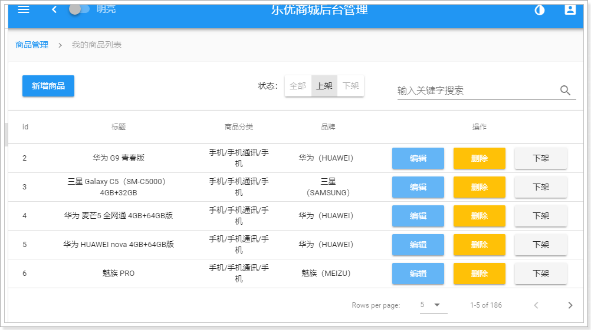
基本与预览的效果一致，OK！
新增商品窗口：

这个表单比较复杂，因为商品的信息比较多，分成了4个部分来填写：
我们刚刚在查询时，已经实现创建了MyGoodsForm.vue，并且已经在MyGoods中引入。
不过目前没有写代码：
<template>
<v-card>
my goods form
</v-card>
</template>
<script>
export default {
name: "my-goods-form",
props: {
oldGoods: {
type: Object
},
isEdit: {
type: Boolean,
default: false
}
},
data() {
return {
}
},
methods: {
}
}
</script>
<style scoped>
</style>然后在MyBrand中，已经引入了MyGoodsForm组件，并且页面中也形成了对话框：
// 导入自定义的表单组件
import MyGoodsForm from './MyGoodsForm'<v-dialog max-width="500" v-model="show" persistent>
<v-card>
<!--对话框的标题-->
<v-toolbar dense dark color="primary">
<v-toolbar-title>{{isEdit ? '修改' : '新增'}}商品</v-toolbar-title>
<v-spacer/>
<!--关闭窗口的按钮-->
<v-btn icon @click="closeWindow">
<v-icon>close</v-icon>
</v-btn>
</v-toolbar>
<!--对话框的内容，表单-->
<v-card-text class="px-5">
<my-goods-form :oldGoods="oldGoods"/>
</v-card-text>
</v-card>
</v-dialog>并且也已经给新增按钮绑定了点击事件：
<v-btn color="primary" @click="addGoods">新增商品</v-btn>addGoods方法中，设置对话框的show属性为true：
addGoods() {
// 修改标记
this.isEdit = false;
// 控制弹窗可见：
this.show = true;
// 把oldBrand变为null
this.oldBrand = null;
}不过弹窗中没有任何数据：
预览效果图中，分四个步骤显示商品表单的组件，叫做stepper，看下文档：
其基本结构如图：
一个步骤线（v-stepper）总的分为两部分：
v-stepper
v-stepper-header的属性：
v-stepper-step的属性
v-stepper-items
v-stepper-content
首先我们在data中定义一个变量，记录当前的步骤数：
data() {
return {
step: 1, // 当前的步骤数，默认为1
}
},然后在模板页面中引入步骤线：
<v-stepper v-model="step">
<v-stepper-header>
<v-stepper-step :complete="step > 1" step="1">基本信息</v-stepper-step>
<v-divider/>
<v-stepper-step :complete="step > 2" step="2">商品描述</v-stepper-step>
<v-divider/>
<v-stepper-step :complete="step > 3" step="3">规格参数</v-stepper-step>
<v-divider/>
<v-stepper-step step="4">SKU属性</v-stepper-step>
</v-stepper-header>
<v-stepper-items>
<v-stepper-content step="1">
基本信息
</v-stepper-content>
<v-stepper-content step="2">
商品描述
</v-stepper-content>
<v-stepper-content step="3">
规格参数
</v-stepper-content>
<v-stepper-content step="4">
SKU属性
</v-stepper-content>
</v-stepper-items>
</v-stepper>效果：
步骤线出现了！
那么问题来了：该如何让这几个步骤切换呢？
如果改变step的值与指定的步骤索引一致，就可以实现步骤切换了：
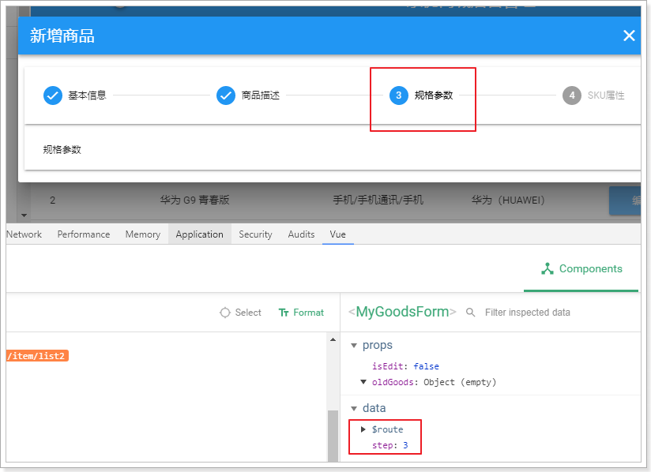
因此，我们需要定义两个按钮，点击后修改step的值，让步骤前进或后退。
那么这两个按钮放哪里？
如果放在MyGoodsForm内，当表单内容过多时，按钮会被挤压到屏幕最下方，不够友好。最好是能够悬停状态。
所以，按钮必须放到MyGoods组件中，也就是父组件。
父组件的对话框是一个card，card组件提供了一个滚动效果，scrollable，如果为true，card的内容滚动时，其头部和底部是可以静止的。
现在card的头部是弹框的标题，card的中间就是表单内容。如果我们把按钮放到底部，就可以实现悬停效果。
改造MyGoods的对话框组件：
查看页面：
现在这两个按钮点击后没有任何反应。我们需要给他们绑定点击事件，来修改MyGoodsForm中的step的值。
也就是说，父组件要修改子组件的属性状态。想到什么了？
props属性。
我们先在父组件定义一个step属性：
然后在点击事件中修改它：
previous(){
if(this.step > 1){
this.step--
}
},
next(){
if(this.step < 4){
this.step++
}
}页面绑定事件：
<!--底部按钮，用来操作步骤线-->
<v-card-actions class="elevation-10">
<v-flex class="xs3 mx-auto">
<v-btn @click="previous" color="primary" :disabled="step === 1">上一步</v-btn>
<v-btn @click="next" color="primary" :disabled="step === 4">下一步</v-btn>
</v-flex>
</v-card-actions>然后把step属性传递给子组件：
<!--对话框的内容，表单-->
<v-card-text class="px-3" style="height: 600px">
<my-goods-form :oldGoods="oldGoods" :step="step"/>
</v-card-text>子组件中接收属性：
测试效果：
商品基本信息，主要是一些纯文本比较简单的SPU属性，例如：
商品分类、商品品牌、商品标题、商品卖点（子标题），包装清单，售后服务
接下来，我们一一添加这些表单项。
注：这里为了简化，我们就不进行form表单校验了。之前已经讲过。
首先，我们需要定义一个goods对象，包括商品的上述属性。
data() {
return {
goods:{
categories:{}, // 商品3级分类数组信息
brandId: 0,// 品牌id信息
title: '',// 标题
subTitle: '',// 子标题
spuDetail: {
packingList: '',// 包装列表
afterService: '',// 售后服务
},
}
}注意，这里我们在goods中定义了spuDetail属性，然后把包装列表和售后服务作为它的属性，这样符合数据库的结构。
商品分类选框之前我们已经做过了。是级联选框。直接拿来用：
<v-cascader
url="/item/category/list"
required
showAllLevels
v-model="goods.categories"
label="请选择商品分类"/>跟以前使用有一些区别：
效果：
查看goods的属性，三级类目都在：
品牌不分级别，使用普通下拉选框即可。我们查看官方文档的下拉选框说明：

组件名：v-select
比较重要的一些属性：
其它次要属性：
v-text-filed组件类似，不再一一列举备选项items需要我们去后台查询，而且必须是在用户选择商品分类后去查询。
我们定义一个属性，保存品牌的待选项信息：
然后编写一个watch，监控goods.categories的变化：
watch: {
'goods.categories': {
deep: true,
handler(val) {
// 判断商品分类是否存在，存在才查询
if (val && val.length > 0) {
// 根据分类查询品牌
this.$http.get("/item/brand/cid/" + this.goods.categories[2].id)
.then(({data}) => {
this.brandOptions = data;
})
}
}
}
}我们的品牌对象包含以下字段：id、name、letter、image。显然item-text应该对应name，item-value应该对应id
因此我们添加一个选框，指定item-text和item-value
<!--品牌-->
<v-select
:items="brandOptions"
item-text="name"
item-value="id"
label="所属品牌"
v-model="goods.brandId"
required
autocomplete
clearable
dense chips
/>页面需要去后台查询品牌信息，我们自然需要提供：
controller
/**
* 根据分类查询品牌
* @param cid
* @return
*/
@GetMapping("cid/{cid}")
public ResponseEntity<List<Brand>> queryBrandByCategory(@PathVariable("cid") Long cid) {
List<Brand> list = this.brandService.queryBrandByCategory(cid);
if(list == null){
new ResponseEntity<>(HttpStatus.NOT_FOUND);
}
return ResponseEntity.ok(list);
}service
public List<Brand> queryBrandByCategory(Long cid) {
return this.brandMapper.queryByCategoryId(cid);
}mapper
根据分类查询品牌有中间表，需要自己编写Sql：
@Select("SELECT b.* FROM tb_brand b LEFT JOIN tb_category_brand cb ON b.id = cb.brand_id WHERE cb.category_id = #{cid}")
List<Brand> queryByCategoryId(Long cid);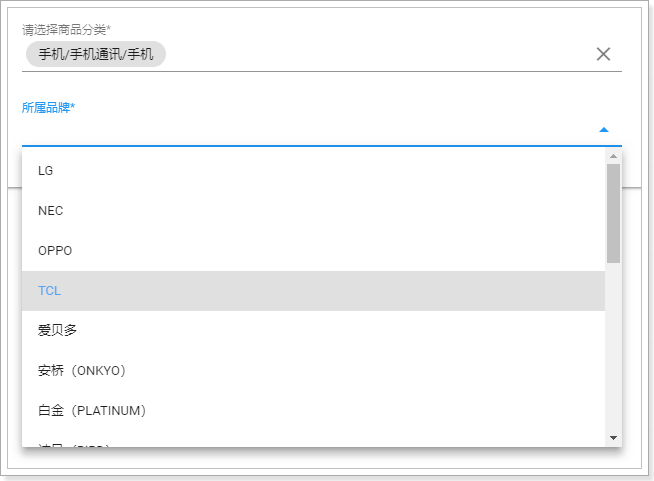
标题等字段都是普通文本，直接使用v-text-field即可：
<v-text-field label="商品标题" v-model="goods.title" :counter="200" required />
<v-text-field label="商品卖点" v-model="goods.subTitle" :counter="200"/>
<v-text-field label="包装清单" v-model="goods.spuDetail.packingList" :counter="1000" multi-line :rows="3"/>
<v-text-field label="售后服务" v-model="goods.spuDetail.afterService" :counter="1000" multi-line :rows="3"/>一些新的属性：
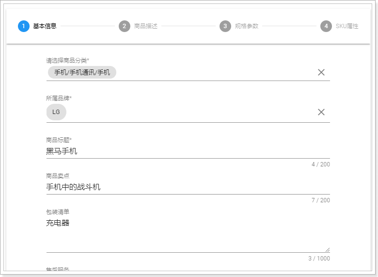
商品描述信息比较复杂，而且图文并茂，甚至包括视频。
这样的内容，一般都会使用富文本编辑器。
百度百科：

通俗来说：富文本，就是比较丰富的文本编辑器。普通的框只能输入文字，而富文本还能给文字加颜色样式等。
富文本编辑器有很多，例如：KindEditor、Ueditor。但并不原生支持vue
但是我们今天要说的，是一款支持Vue的富文本编辑器：vue-quill-editor
GitHub的主页：https://github.com/surmon-china/vue-quill-editor
Vue-Quill-Editor是一个基于Quill的富文本编辑器：Quill的官网

使用非常简单：
第一步：安装，使用npm命令：
npm install vue-quill-editor --save第二步：加载，在js中引入：
全局使用：
import Vue from 'vue'
import VueQuillEditor from 'vue-quill-editor'
const options = {}; /* { default global options } */
Vue.use(VueQuillEditor, options); // options可选局部使用：
import 'quill/dist/quill.core.css'
import 'quill/dist/quill.snow.css'
import 'quill/dist/quill.bubble.css'
import {quillEditor} from 'vue-quill-editor'
var vm = new Vue({
components:{
quillEditor
}
})第三步：页面引用：
<quill-editor v-model="goods.spuDetail.description" :options="editorOption"/>不过这个组件有个小问题，就是图片上传的无法直接上传到后台，因此我们对其进行了封装，支持了图片的上传。

使用也非常简单：
<v-stepper-content step="2">
<v-editor v-model="goods.spuDetail.description" upload-url="/upload/image"/>
</v-stepper-content>
商品规格参数与商品分类绑定，因此我们需要在用户选择商品分类后，去后台查询对应的规格参数模板。
首先，我们在data中定义变量，记录查询到的规格参数模板：
然后，我们通过watch监控goods.categories的变化，然后去查询规格：
查看是否查询到：
获取到了规格参数，还需要把它展示到页面中。
现在查询到的规格参数只有key，并没有值。值需要用户来根据SPU信息填写，因此规格参数最终需要处理为表单。
整体结构
整体来看，规格参数是数组，每个元素是一组规格的集合。我们需要分组来展示。比如每组放到一个card中。
注意事项：
规格参数中的属性有一些需要我们特殊处理：
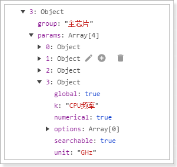
页面代码：
<!--3、规格参数-->
<v-stepper-content step="3">
<v-flex class="xs10 mx-auto px-3">
<!--遍历整个规格参数，获取每一组-->
<v-card v-for="spec in specifications" :key="spec.group" class="my-2">
<!--组名称-->
<v-card-title class="subheading">{{spec.group}}</v-card-title>
<!--遍历组中的每个属性，并判断是否是全局属性，不是则不显示-->
<v-card-text v-for="param in spec.params" :key="param.k" v-if="param.global" class="px-5">
<!--判断是否有可选项，如果没有，则显示文本框。还要判断是否是数值类型，如果是把unit显示到后缀-->
<v-text-field v-if="param.options.length <= 0"
:label="param.k" v-model="param.v" :suffix="param.unit || ''"/>
<!--否则，显示下拉选项-->
<v-select v-else :label="param.k" v-model="param.v" :items="param.options"/>
</v-card-text>
</v-card>
</v-flex>
</v-stepper-content>效果：
sku特有属性也存在与specifications中，但是我们现在只想展示特有属性，而不是从头遍历一次。因此，我们应该从specifications中把特有规格属性拆分出来独立保存。
首先：我们在data中新建一个属性，保存特有的规格参数：
然后，在查询完成规格模板后，立刻对规格参数进行处理，筛选出特有规格参数，保存到specialSpecs中：
// 根据分类查询规格参数
this.$http.get("/item/spec/" + this.goods.categories[2].id)
.then(({data}) => {
// 保存全部规格
this.specifications = data;
// 对特有规格进行筛选
const temp = [];
data.forEach(({params}) => {
params.forEach(({k, options, global}) => {
if (!global) {
temp.push({
k, options,selected:[]
})
}
})
})
this.specialSpecs = temp;
})要注意：我们添加了一个selected属性，用于保存用户填写的信息
查看数据：
接下来，我们把筛选出的特有规格参数，渲染到SKU页面：
我们的目标效果是这样的：
可以看到，
页面代码实现：
<!--4、SKU属性-->
<v-stepper-content step="4">
<v-flex class="mx-auto">
<!--遍历特有规格参数-->
<v-card flat v-for="spec in specialSpecs" :key="spec.k">
<!--特有参数的标题-->
<v-card-title class="subheading">{{spec.k}}:</v-card-title>
<!--特有参数的待选项，需要判断是否有options，如果没有，展示文本框，让用户自己输入-->
<v-card-text v-if="spec.options.length <= 0" class="px-5">
<v-text-field :label="'输入新的' + spec.k" v-model="spec.selected"/>
</v-card-text>
<!--如果有options，需要展示成多个checkbox-->
<v-card-text v-else class="container fluid grid-list-xs">
<v-layout row wrap class="px-5">
<v-checkbox color="primary" v-for="o in spec.options" :key="o" class="flex xs3"
:label="o" v-model="spec.selected" :value="o"/>
</v-layout>
</v-card-text>
</v-card>
</v-flex>
</v-stepper-content>我们的实现效果：
测试下，勾选checkbox或填写文本会发生什么：
看下规格模板的值：
刚才的实现中，普通文本项只有一个，如果用户想添加更多值就不行。我们需要让用户能够自由添加新的文本框，而且还能删除。
这里有个取巧的方法：
还记得我们初始化 特有规格参数时，新增了一个selected属性吗，用来保存用户填写的值，是一个数组。每当用户新加一个值，该数组的长度就会加1，而初始长度为0
另外，v-for指令有个特殊之处，就在于它可以遍历数字。比如 v-for="i in 10"，你会得到1~10
因此，我们可以遍历selected的长度，每当我们输入1个文本，selected长度会加1，自然会多出一个文本框。
代码如下：
<v-card flat v-for="spec in specialSpecs" :key="spec.k">
<!--特有参数的标题-->
<v-card-title class="subheading">{{spec.k}}:</v-card-title>
<!--特有参数的待选项，需要判断是否有options，如果没有，展示文本框，让用户自己输入-->
<v-card-text v-if="spec.options.length <= 0" class="px-5">
<div v-for="i in spec.selected.length+1" :key="i">
<v-text-field :label="'输入新的' + spec.k" v-model="spec.selected[i-1]" v-bind:value="i"/>
</div>
</v-card-text>
<!--如果有options，需要展示成多个checkbox-->
<v-card-text v-else class="container fluid grid-list-xs">
<v-layout row wrap class="px-5">
<v-checkbox color="primary" v-for="o in spec.options" :key="o" class="flex xs3"
:label="o" v-model="spec.selected" :value="o"/>
</v-layout>
</v-card-text>
</v-card>效果：
而删除文本框相对就比较简单了，只要在文本框末尾添加一个按钮，添加点击事件即可，代码：
添加了一些布局样式，以及一个按钮，在点击事件中删除一个值。
当我们选定SKU的特有属性时，就会对应出不同排列组合的SKU。
举例：
当你选择了上图中的这些选项时：
此时会产生多少种SKU呢？ 应该是 2 2 1 = 4种。
因此，接下来应该由用户来对这4种sku的信息进行详细填写，比如库存和价格等。而多种sku的最佳展示方式，是表格（淘宝、京东都是这么做的），如图：
而且这个表格应该随着用户选择的不同而动态变化。如何实现？
大家看这个结果就能发现，这其实是在求多个数组的笛卡尔积。作为一个程序员，这应该是基本功了吧。
两个数组笛卡尔积
假如有两个数组，求笛卡尔积，其基本思路是这样的：
示例1：
const arr1 = ['1','2','3'];
const arr2 = ['a','b','c'];
const result = [];
arr1.forEach(e1 => {
arr2.forEach(e2 => {
result.push(e1 + "_" + e2)
})
})
console.log(result);结果：
完美实现。
N个数组的笛卡尔积
如果是N个数组怎么办？
不确定数组数量，代码没有办法写死。该如何处理？
思路：
把前两次运算的结果作为第三次运算的参数。大家想到什么了？
没错，之前讲过的一个数组功能：Reduce
reduce函数的声明：
reduce(callback,initvalue)callback：是一个回调函数。这个callback可以接收2个参数：arg1,arg2
initvalue，初始化值。第一次调用callback时把initvalue作为第一个参数，把数组的第一个元素作为第二个参数运算。如果未指定，则第一次运算会把数组的前两个元素作为参数。
reduce会把数组中的元素逐个用这个函数处理，然后把结果作为下一次回调函数的第一个参数，数组下个元素作为第二个参数，以此类推。
因此，我们可以把想要求笛卡尔积的多个数组先放到一个大数组中。形成二维数组。然后再来运算：
示例2：
const arr1 = ['1', '2', '3'];
const arr2 = ['a', 'b'];
// 用来作为运算的二维数组
const arr3 = [arr1, arr2, ['x', 'y']]
const result = arr3.reduce((last, el) => {
const arr = [];
// last：上次运算结果
// el：数组中的当前元素
last.forEach(e1 => {
el.forEach(e2 => {
arr.push(e1 + "_" + e2)
})
})
return arr
});
console.log(result);结果：
来看我们的业务逻辑：
首先，我们已经有了一个特有参数的规格模板：
[
{
"k": "机身颜色",
"selected": ["红色","黑色"]
},
{
"k": "内存",
"selected": ["8GB","6GB"]
},
{
"k": "机身存储",
"selected": ["64GB","256GB"]
}
]可以看做是一个二维数组。
一维是参数对象。
二维是参数中的selected选项。
我们想要的结果：
[
{"机身颜色":"红色","内存":"6GB","机身存储":"64GB"},
{"机身颜色":"红色","内存":"6GB","机身存储":"256GB"},
{"机身颜色":"红色","内存":"8GB","机身存储":"64GB"},
{"机身颜色":"红色","内存":"8GB","机身存储":"256GB"},
{"机身颜色":"黑色","内存":"6GB","机身存储":"64GB"},
{"机身颜色":"黑色","内存":"6GB","机身存储":"256GB"},
{"机身颜色":"黑色","内存":"8GB","机身存储":"64GB"},
{"机身颜色":"黑色","内存":"8GB","机身存储":"256GB"},
]思路是这样：
[{}]，如果：
代码：
我们在Vue中新增一个计算属性，按照上面所讲的逻辑，计算所有规格参数的笛卡尔积
computed: {
skus() {
// 过滤掉用户没有填写数据的规格参数
const arr = this.specialSpecs.filter(s => s.selected.length > 0);
// 通过reduce进行累加笛卡尔积
return arr.reduce((last, spec) => {
const result = [];
last.forEach(o => {
spec.selected.forEach(option => {
const obj = {};
Object.assign(obj, o);
obj[spec.k] = option;
result.push(obj);
})
})
return result
}, [{}])
}
}结果：
优化：这里生成的是SKU的数组。因此只包含SKU的规格参数是不够的。结合数据库知道，还需要有下面的字段：
我们需要给生成的每个sku对象添加上述字段，代码修改如下：
computed:{
skus(){
// 过滤掉用户没有填写数据的规格参数
const arr = this.specialSpecs.filter(s => s.selected.length > 0);
// 通过reduce进行累加笛卡尔积
return arr.reduce((last, spec, index) => {
const result = [];
last.forEach(o => {
for(let i = 0; i < spec.selected.length; i++){
const option = spec.selected[i];
const obj = {};
Object.assign(obj, o);
obj[spec.k] = option;
// 拼接当前这个特有属性的索引
obj.indexes = (o.indexes||'') + '_'+ i
if(index === arr.length - 1){
// 如果发现是最后一组，则添加价格、库存等字段
Object.assign(obj, { price:0, stock:0,enable:false, images:[]})
// 去掉索引字符串开头的下划线
obj.indexes = obj.indexes.substring(1);
}
result.push(obj);
}
})
return result
},[{}])
}
}查看生成的数据：
页面展现是一个表格。我们之前已经用过。表格需要以下信息：
刚才我们的计算属性skus得到的就是表格数据了。我们还差头：headers
头部信息也是动态的，用户选择了一个属性，就会多出一个表头。与skus是关联的。
既然如此，我们再次编写一个计算属性，来计算得出header数组：
headers(){
if(this.skus.length <= 0){
return []
}
const headers = [];
// 获取skus中的任意一个，获取key，然后遍历其属性
Object.keys(this.skus[0]).forEach(k => {
let value = k;
if(k === 'price'){
// enable，表头要翻译成“价格”
k = '价格'
}else if(k === 'stock'){
// enable，表头要翻译成“库存”
k = '库存';
}else if(k === 'enable'){
// enable，表头要翻译成“是否启用”
k = '是否启用'
} else if(k === 'indexes' || k === 'images'){
// 图片和索引不在表格中展示
return;
}
headers.push({
text: k,
align: 'center',
sortable: false,
value
})
})
return headers;
}接下来编写页面，实现table。
需要注意的是，price、stock字段需要用户填写数值，不能直接展示。enable要展示为checkbox，让用户选择，如图：
代码：
<v-card>
<!--标题-->
<v-card-title class="subheading">SKU列表</v-card-title>
<!--SKU表格，hide-actions因此分页等工具条-->
<v-data-table :items="skus" :headers="headers" hide-actions item-key="indexes">
<template slot="items" slot-scope="props">
<!--价格和库存展示为文本框-->
<td v-for="(v,k) in props.item" :key="k" v-if="['price', 'stock'].includes(k)"
class="text-xs-center">
<v-text-field single-line v-model.number="props.item[k]"/>
</td>
<!--enable展示为checkbox-->
<td class="text-xs-center" v-else-if="k === 'enable'">
<v-checkbox v-model="props.item[k]"/>
</td>
<!--indexes和images不展示，其它展示为普通文本-->
<td class="text-xs-center" v-else-if="!['indexes','images'].includes(k)">{{v}}</td>
</template>
</v-data-table>
</v-card>效果：
这个表格中只展示了基本信息，当用户需要上传图片时，该怎么做呢？
Vuetify的table有一个展开功能，可以提供额外的展示空间：
用法也非常简单，添加一个template，把其slot属性指定为expand即可：
效果：
接下来就是我们的图片上传组件：v-upload
我们在step=4，也就是SKU属性列表页面， 添加一个提交按钮。
<!--提交按钮-->
<v-flex xs3 offset-xs9>
<v-btn color="info">保存商品信息</v-btn>
</v-flex>效果：
当用户点击保存，我们就需要对页面的数据进行整理，然后提交到后台服务。
现在我们页面包含了哪些信息呢？我们与数据库对比，看看少什么
在页面绑定点击事件：
<!--提交按钮-->
<v-flex xs3 offset-xs9>
<v-btn color="info" @click="submit">保存商品信息</v-btn>
</v-flex>编写代码，整理数据：
submit(){
// 表单校验。 略
// 先处理goods，用结构表达式接收,除了categories外，都接收到goodsParams中
const {categories: [{id:cid1},{id:cid2},{id:cid3}], ...goodsParams} = this.goods;
// 处理规格参数
const specs = this.specifications.map(({group,params}) => {
const newParams = params.map(({options,...rest}) => {
return rest;
})
return {group,params:newParams};
});
// 处理特有规格参数模板
const specTemplate = {};
this.specialSpecs.forEach(({k, selected}) => {
specTemplate[k] = selected;
});
// 处理sku
const skus = this.skus.filter(s => s.enable).map(({price,stock,enable,images,indexes, ...rest}) => {
// 标题，在spu的title基础上，拼接特有规格属性值
const title = goodsParams.title + " " + Object.values(rest).join(" ");
return {
price: this.$format(price+""),stock,enable,indexes,title,// 基本属性
images: !images ? '' : images.join(","), // 图片
ownSpec: JSON.stringify(rest), // 特有规格参数
}
});
Object.assign(goodsParams, {
cid1,cid2,cid3, // 商品分类
skus, // sku列表
})
goodsParams.spuDetail.specifications= JSON.stringify(specs);
goodsParams.spuDetail.specTemplate = JSON.stringify(specTemplate);
console.log(goodsParams)
}点击测试，看效果：
向后台发起请求，因为请求体复杂，我们直接发起Json请求：
this.$http.post("/item/goods",goodsParams)
.then(() => {
// 成功，关闭窗口
this.$emit('close');
// 提示成功
this.$message.success("新增成功了")
})
.catch(() => {
this.$message.error("保存失败！");
});
})Spu
@Table(name = "tb_spu")
public class Spu {
@Id
@GeneratedValue(strategy = GenerationType.IDENTITY)
private Long id;
private Long brandId;
private Long cid1;// 1级类目
private Long cid2;// 2级类目
private Long cid3;// 3级类目
private String title;// 标题
private String subTitle;// 子标题
private Boolean saleable;// 是否上架
private Boolean valid;// 是否有效，逻辑删除用
private Date createTime;// 创建时间
private Date lastUpdateTime;// 最后修改时间
}SpuDetail
@Table(name="tb_spu_detail")
public class SpuDetail {
@Id
private Long spuId;// 对应的SPU的id
private String description;// 商品描述
private String specTemplate;// 商品特殊规格的名称及可选值模板
private String specifications;// 商品的全局规格属性
private String packingList;// 包装清单
private String afterService;// 售后服务
}Sku
@Table(name = "tb_sku")
public class Sku {
@Id
@GeneratedValue(strategy = GenerationType.IDENTITY)
private Long id;
private Long spuId;
private String title;
private String images;
private Long price;
private String ownSpec;// 商品特殊规格的键值对
private String indexes;// 商品特殊规格的下标
private Boolean enable;// 是否有效，逻辑删除用
private Date createTime;// 创建时间
private Date lastUpdateTime;// 最后修改时间
@Transient
private Long stock;// 库存
}注意：这里保存了一个库存字段，在数据库中是另外一张表保存的，方便查询。
Stock
@Table(name = "tb_stock")
public class Stock {
@Id
private Long skuId;
private Integer seckillStock;// 秒杀可用库存
private Integer seckillTotal;// 已秒杀数量
private Integer stock;// 正常库存
}四个问题：
请求方式：POST
请求路径：/goods
请求参数：Spu的json格式的对象，spu中包含spuDetail和Sku集合。这里我们该怎么接收？我们之前定义了一个SpuBo对象，作为业务对象。这里也可以用它，不过需要再扩展spuDetail和skus字段：
public class SpuBo extends Spu {
@Transient
String cname;// 商品分类名称
@Transient
String bname;// 品牌名称
@Transient
SpuDetail spuDetail;// 商品详情
@Transient
List<Sku> skus;// sku列表
}返回类型：无
代码：
/**
* 新增商品
* @param spu
* @return
*/
@PostMapping
public ResponseEntity<Void> saveGoods(@RequestBody Spu spu) {
try {
this.goodsService.save(spu);
return new ResponseEntity<>(HttpStatus.CREATED);
} catch (Exception e) {
e.printStackTrace();
return new ResponseEntity<>(HttpStatus.INTERNAL_SERVER_ERROR);
}
}注意：通过@RequestBody注解来接收Json请求
Service
这里的逻辑比较复杂，我们除了要对SPU新增以外，还要对SpuDetail、Sku、Stock进行保存
@Transactional
public void save(SpuBo spu) {
// 保存spu
spu.setSaleable(true);
spu.setValid(true);
spu.setCreateTime(new Date());
spu.setLastUpdateTime(spu.getCreateTime());
this.spuMapper.insert(spu);
// 保存spu详情
spu.getSpuDetail().setSpuId(spu.getId());
this.spuDetailMapper.insert(spu.getSpuDetail());
// 保存sku和库存信息
saveSkuAndStock(spu.getSkus(), spu.getId());
}
private void saveSkuAndStock(List<Sku> skus, Long spuId) {
for (Sku sku : skus) {
if (!sku.getEnable()) {
continue;
}
// 保存sku
sku.setSpuId(spuId);
// 默认不参与任何促销
sku.setCreateTime(new Date());
sku.setLastUpdateTime(sku.getCreateTime());
this.skuMapper.insert(sku);
// 保存库存信息
Stock stock = new Stock();
stock.setSkuId(sku.getId());
stock.setStock(sku.getStock());
this.stockMapper.insert(stock);
}
}都是通用Mapper，略 Edit By MaHua